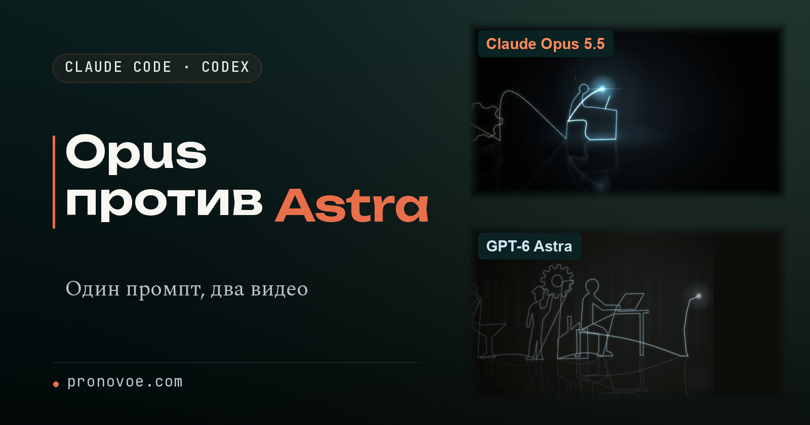

Условия опыта
Одно задание для двух моделей
Обе версии сделаны 2 октября 2026 года. Claude Opus 5.5 работал в Claude Code, GPT-6 Astra в Codex. Это помощники, которые выполняют задания в папке на компьютере и пишут код. Claude работал в отдельном чате и не открывал папку второй версии. Обеим моделям дали этот промпт дословно, без переписывания:
Make a storyline about the evolution of humans with a single point of light that draws the sequence. The trails hang in 3D and the camera follows them, shot like long-exposure photography with haze, soft blur and a wet floor.
По-русски: создай историю об эволюции человека, в которой одна светящаяся точка рисует всю последовательность. Следы висят в 3D, камера следует за ними, снято как фото с длинной выдержкой: дымка, мягкое размытие, мокрый пол.
В задании есть и сюжет, и способ его показать. Светящаяся точка должна оставить в пространстве линии, а камера пройти вслед за ними. Длинная выдержка здесь означает вид фотографии, на которой движущийся свет оставляет протяжённый след.
Обе версии построены только кодом, без исходных картинок и видео. Из этого кода локальный движок HyperFrames собрал два видео по 16 секунд. В опыте использовали версию 0.8.20. Такой способ сборки описан в официальном репозитории HyperFrames.
Сначала посмотри
Два видео на одном экране
Нажми воспроизведение и сравни обе версии целиком. Сверху Claude Opus 5.5, снизу GPT-6 Astra.

При первом просмотре следи за историей. При втором сравни линии, пространство вокруг них и отражения внизу. Именно эти детали позволяют проверить остальные требования, даже если одна версия сразу нравится больше.
Что считывается сразу
Сюжет, точка и движение камеры
История эволюции есть в обеих версиях, но у GPT-6 Astra она читается легче. Если смотреть видео ради самого сюжета, это заметное преимущество в этом опыте.
Следующие два условия выполнены у обеих моделей: одна точка рисует последовательность, камера следует за следами. На этом уровне обе версии решают поставленную задачу.
Но в промпте было ещё требование к тому, как выглядит свет. После понятного сюжета стоит проверить саму картинку.
Как выглядит свет
Длинная выдержка, дымка и мокрый пол
В версии Claude есть эффект длинной выдержки и дымка. У GPT-6 Astra оба пункта выполнены частично. Здесь важно смотреть не только на форму световой линии, но и на то, как свет выглядит в окружающем пространстве.
Мокрый пол есть у обеих моделей. Отражения внизу отвечают одному требованию, но сами по себе не подтверждают наличие дымки или эффекта длинной выдержки. Поэтому эти пункты оцениваются отдельно.
Остаются два условия, которые труднее заметить с первого просмотра: где висят нарисованные следы и насколько мягкими получились их края.
Самые тонкие требования
Объём следов и мягкое размытие
«Следы висят в 3D» означает, что линии находятся в объёмном пространстве. Это отдельный пункт рядом с движением камеры. По результатам этого опыта Claude выполнил оба условия, а GPT-6 Astra выполнил движение камеры, но не объём следов.
Мягкое размытие тоже есть у Claude и отсутствует у GPT-6 Astra. Оно было прямо названо в промпте, поэтому его учитываем отдельно от дымки и длинной выдержки.
Теперь можно собрать все наблюдения в одну таблицу и ответить на начальный вопрос. Понятность истории и точность выполнения задания дали разные результаты.
Итог и твой следующий опыт
Claude Opus 5.5 или GPT-6 Astra: как выбрать под задачу
В таблице каждый пункт промпта получает один балл только за полное выполнение. «Частично» в итог не входит. Это наблюдения по двум видео этого опыта.
| Требование | Claude Opus 5.5 | GPT-6 Astra |
|---|---|---|
| История эволюции | Да | Да, читается легче |
| Одна точка рисует всё | Да | Да |
| Следы висят в 3D | Да | Нет |
| Камера следует за следами | Да | Да |
| Как длинная выдержка | Да | Частично |
| Дымка | Да | Частично |
| Мягкое размытие | Да | Нет |
| Мокрый пол | Да | Да |
| Полностью выполнено | 8 из 8 | 4 из 8 |
Сюжет понятнее у GPT-6 Astra. Промпт точнее выполнил Claude. Если для твоего видео важнее сразу узнаваемая история, в этом опыте сильнее результат Astra. Если нужно сохранить все перечисленные визуальные детали, точнее результат Claude.
Это вывод по одной задаче и двум видео от 2 октября 2026 года. Он не определяет лучшую модель для всех задач. Сравнение на твоём промпте может дать другой результат.
Что нужно до начала
Для повтора нужны Claude Code и Codex, если хочешь сравнить обе модели. Для одной версии достаточно одного из этих помощников. Если они ещё не установлены, начни с инструкции по первому запуску Claude Code и Codex.
Создай две отдельные папки, открой одну в Claude Code, другую в Codex и начни отдельный чат в каждой. Подготовку ниже выполни в каждом чате.
Чтобы превратить код в видео, понадобится HyperFrames. Он работает на компьютере: агент описывает сцены кодом, движок собирает из них MP4, обычный видеофайл. Можно представить код как описание последовательности сцен, а HyperFrames как сборщик готового фильма. Понятность истории и наличие каждой детали всё равно проверяй по самому видео.
В официальной документации HyperFrames установка движка указана так. Команду можно выполнить в терминале, окне для текстовых команд, или передать своему агенту:
npm install -g hyperframes
Попроси помощника проверить установку и поставить остальные зависимости, программы, нужные для сборки. Официальный быстрый старт отдельно объясняет подключение инструкций HyperFrames к агенту. Установка самого движка и подключение этих инструкций решают разные задачи.
Подготовь эту папку для создания видео через HyperFrames по официальной документации https://hyperframes.heygen.com/quickstart и https://hyperframes.heygen.com/packages/cli. Проверь установку движка и инструкций для этого агента, поставь необходимые зависимости. Проверь, что можно собрать локальный MP4. Само видео пока не создавай.
Результат подготовки: помощник подтвердил, что движок и инструкции доступны, а зависимости для сборки MP4 установлены. Если появилась ошибка, передай ему её текст.
Шаг 1. Дай обеим моделям один промпт
Для этого опыта выбери Claude Opus 5.5 и GPT-6 Astra. Как выбирать модель и глубину рассуждения, объясняет статья о модели и effort. После подготовки отправь в каждый чат один и тот же промпт из начала статьи. Не показывай одной модели результат другой.
Для другой задачи используй свой промпт, но передай обеим моделям одну и ту же версию. Чтобы ограничить работу кодом и задать одинаковую длительность, добавь обеим одну и ту же просьбу:
Сделай по этому промпту видео длительностью 16 секунд через HyperFrames. Используй только код, без исходных картинок и видео. Сохрани готовый MP4 в этой папке.
Результат: в каждой папке есть свой MP4. Обе модели получили одинаковые требования.
Шаг 2. Сравни результат с каждым требованием
Открой оба видео и выпиши отдельной строкой каждый пункт своего промпта. Напротив поставь «да», «частично» или «нет». Сначала проверь, понятен ли сюжет, затем переходи к деталям. Для световой эволюции можно взять восемь строк из таблицы выше.
Результат: видно, что выполнено полностью, что лишь частично, а что отсутствует. Впечатление от сюжета записано отдельно.
Шаг 3. Выбери по тому, что нужно твоей задаче
Посчитай полностью выполненные пункты. Затем сравни этот счёт с тем, насколько понятен результат без объяснений. Здесь эти две проверки и дали ответ: Astra яснее показала историю, Claude сохранил все восемь требований.
Результат: у тебя есть основание для выбора модели на своей задаче. Ты видишь и качество истории, и цену пропущенной детали.
Модели сравнимы. Как распределить задачи между ИИ-агентами?
Инструкция пройдена. А как сделать, чтобы нейросети приводили клиентов?
Концентрат - онлайн-мероприятие Ивана Сергеева по вайбмаркетингу: 13-15 октября, 19:00 по Москве. Участие бесплатное, регистрация на сайте до 14 октября
ЗарегистрироватьсяРеклама. ИП Сергеев И. С., ИНН 352511695540. erid: 2VtzqviiWtm